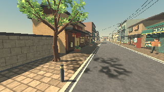

Early Access Demo
Komorebi
Streets
Take a quiet walk past lantern-lit shops and beneath moving leaf shadows in a pixel-art Japanese neighbourhood.
Play demoDesktop browser · Keyboard and mouse · 38 MB game

Controls
- W A S D
- Walk
- Mouse
- Click the street to capture the mouse and look around
- Esc / P
- Esc releases the mouse. P toggles Pause.
- T
- Cycle Day, Dusk and Komorebi
About the demo
This early demo explores one fictional, Asakusa-inspired block. A geographical reconstruction of Tokyo is still ahead.
Play opens the game in a full-page view with a loading indicator. Select Start Walking when it finishes to enable sound. Use the pause menu to toggle fullscreen, and Esc to leave fullscreen.